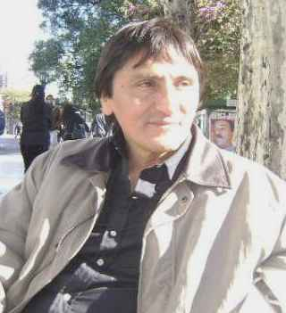
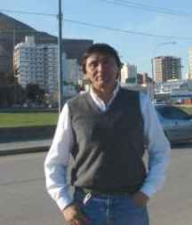

¿Del amor?
| Autor: Juan Carlos Siárez (Argentina) |
|---|
¡Uia!
Bueno, pero aclarando que lo que escriba es sólo mi punto de vista, aunque a veces sea muy disparatado ¿ok?
Bien, comienzo tratando de definir lo que se llama amor.
Como no encuentro una palabra (o varias) para definir con exactitud, prefiero dar un ejemplo que puede servir en este caso.
Lo máximo que podemos dar en prueba de nuestro amor por la persona que amamos, es la vida ¿verdad?
Es decir, una madre daría la vida por el amor que tiene hacia su hijo, un adolescente daría la vida por su primer amor, un esposo daría la vida por quien es (o será)
la madre de sus hijos.
Y así te puedo poner distintos ejemplos.
Pero si comenzamos analizando el amor que uno siente cuando tiene quince años (más o menos) y nos preguntaran si daríamos la vida por la otra persona, seguramente
la respuesta es afirmativa (a morir).
Luego pasa el tiempo (y a veces no mucho), y se pasa eso tan intenso que sentíamos por esa persona…
Ahora tomemos a alguien de veinticinco años a punto de casarse y le preguntamos si daría la vida por su pareja y seguramente dice que sí.
Pero, después de unos años de casados, se separan y a veces hasta se odian y no se pueden ni ver y…
Si le preguntamos a alguien de treinta y cinco (o cuarenta y cinco) que acaba de formar una pareja “para toda la vida”, también puede estar en la misma situación de dar
la vida por esa persona amada…
Entonces ¿cuál es el amor verdadero?
Seguramente se puede decir que el último, pero ¿y los demás? ¿O no dabas la vida en cada caso?
¡Recreo!
Amor Universal Somos distintos Con amor |
|---|
. . .
Saco como conclusión que el amor se da en distintas etapas de la vida, con una intensidad desmedida cuando somos adolescentes y, luego, un poco más controlada (a veces),
a medida que van pasando los años.
Pero la cantidad de amor que uno siente no la podemos medir con una vara o manejarla realmente a nuestro antojo (aunque haya alguna manera de controlar los sentimientos):
es una cosa que se da o no se da, llamale química o como quieras.
Podemos decir que la otra parte es la que nos falta para completar una unidad, y al principio, encajan todos los engranajes para que esta máquina funcione a la perfección,
pero pasado un tiempo, a veces, algunos engranajes se desgastan, o no presentan la flexibilidad necesaria otros y comienzan los problemas, las incompatibilidades.
Podría pasar, ahora, a tratar de definir la capacidad de amar, es decir, cuánto es capaz de amar una persona.
Si bien dije que dar la vida sería la medida máxima de esta capacidad, pero, sin quitarnos la vida, ¿cuánto podemos querer? Es más difícil estando vivos ¿no?
Diría que la capacidad de amar es infinita, y que podemos amar de distintas maneras a muchas personas, hasta ahí creo que estamos de acuerdo.
Pero ahora viene la parte complicada, ¿somos capaces de querer a varias personas de la misma manera? ¿Y por qué no? (suponiendo que tu respuesta sea no) porque
nos enseñaron que si queremos a alguien no podemos querer a otra persona y, por lo tanto, eso que sentíamos hasta recién ya no puede llamarse amor ¿verdad?
Pero ¿cuántas veces sentimos confusión y no sabemos qué hacer?… y terminamos guiándonos por lo que nos enseñaron, es decir, “sólo se puede querer
a una persona a la vez”.
También nos dijeron: el amor se presenta una sola vez en la vida, y es para siempre… y ese es el verdadero amor…
…y ni hablar si nos comprometíamos o nos casábamos o teníamos hijos, porque ahí sí teníamos que aguantar toda la vida (qué problema si al año, no
queríamos saber más nada).
Perdón ¿nos tomamos otro recreo?
. . .
La palabra "gracias" Y se pueden agregar |
 |
|---|
. . .
Entiendo que tengo una manera de pensar bastante particular (pero pienso, ja), y quizás mucha gente no está de acuerdo con ella, pero por favor, permítanme ser yo, con mis locuras,
gracias.
Y no intento que cambies tu forma de pensar, sólo te muestro la mía (que sí fue cambiando a través de los años).
Ahora si volvemos a tomar las distintas edades donde uno siente cosas (amor).
A los quince (más o menos) queremos a alguien porque nos hace reir (¿felices?) y cuando no está nos falta el aire y esas cosas ¿me entendés?
Pero si seguimos con esa persona, con el tiempo ya no nos alegramos tanto (¿no somos tan felices?) ni nos falta el aire cuando no está, por ahí casi es un alivio que no esté tanto
tiempo con nosotros (¿?).
Y hasta nos parece estúpido hoy, lo que antes nos divertía tanto. “g g”.
Si tomamos a la pareja de veinticinco (más o menos) queremos a alguien porque nos sentimos seguros de querer, de que nos quiera, que nos pertenezca, sí, que
es una exclusividad nuestra (¿una propiedad?) y es compatible para formar una pareja formal y estable o algo así ¿me explico?
Y cuando tenemos treinta y cinco (más o menos, o más) queremos a alguien porque no se parece a ninguna de las personas con las que estuvimos antes y buscamos
las diferencias con lo anterior, y muchas veces cometemos el error de ver virtudes inexistentes en ella, con tal que no se parezca a nuestra anterior pareja, (o a la inversa,
queremos encontrar en ésta, algo bueno que tenía alguien que ya se fue) y todo en base a lo que nos muestra que es.
Bueno, en definitiva, cuando van pasando los años queremos distintas cosas en la persona que amamos porque somos seres en constante cambio y no necesitamos
siempre lo mismo.
Entonces, si logro tener a alguien al lado mío, o la otra persona logró tenerme a su lado, ya sea por decisión propia o por lo inculcado en su infancia….
Veremos que quien
está al lado nuestro, no es muy parecido a quien nosotros conocimos y amamos, y por otro lado nosotros somos totalmente distintos a quienes fuimos
cuando jóvenes y nos aceptan por costumbre, algo de cariño (“y bueh… ya tá, qué le vamo´ hacer”, dijo la abuela).
¡Otro recreo!
Che, ¿No molesto mucho con los recreos?
¿O están mejores los recreos que los pensamientos?
Mirá que tengo recreitos como para hacer dulce ¡eh!
.. . . .
Los tiempos
Para un niño de un año
Seis meses, es la mitad de su vida
Para alguien de noventa años
Un año es poca cosa, pero…
El año siguiente, puede ser una utopía
Los relojes, se atrasan o adelantan
Nuestros ritmos cardíacos, también
A veces, ciertamente
Otras, sólo sensacionalmente
Cuando estoy con vos
Se aceleran los tiempos
Pero…
Mientras me golpea el destino
…en el ring de la vida
Un minuto, parece un siglo
Esta foto tuya que estoy mirando
Representa un momento
Pero me transporta
Queriendo detener el tiempo
Para vivir una y otra vez
Sólo ese instante… eternamente
. . .
Como conclusión, para no hacer de este tema algo muy largo (y pase a ser aburrido), creo que el amor es un sentimiento muy intenso que pasa (vive) dentro nuestro
, provocado por alguien (una o más personas), y que si bien podemos dar la vida por esa persona mientras la amamos, este amor tiene fecha de elaboración, pero no
de vencimiento y puede terminar hoy…
Y sin explicaciones, porque si bien a veces sabemos por qué nos enamoramos, a veces no podemos explicarnos por qué dejamos de amar.
Y sé:
Que el amor es ciego (o al menos tuerto), porque vemos sólo la parte buena del ser querido.
Que existe el amor a primera vista (aunque quizás sea el más ciego de todos).
Que es sordo, porque no escuchamos las palabras de quienes ya pasaron por lo mismo, y a veces no queremos escuchar ni nuestro propio sentido común.
Que es mudo porque callamos tantas cosas… que sí diríamos si no estuviéramos enamorados.
Que perdemos el olfato, porque si bien nuestra persona amada no usa el perfume que nos gusta (o está muy lejos de oler como nos gustaría) seguimos tratándola con un
cariño tal, como si lo hiciera.
Que perdemos el gusto, porque nos ha pasado tener que soportar cada trago amargo… y con mucho gusto lo volvimos a hacer.
Y puedo decir que del tacto no queda nada, porque a pesar que nos podemos quemar, seguimos adelante, sabiendo que nos podemos volver a quemar.
Es decir, que podemos perder todos los sentidos por amor, un loco amor, ese amor del que nunca nos olvidaremos, ese que no queremos que se repita por todo lo que sufrimos…
pero qué lindo fue poderlo conocer ¿no?
Y si bien el amor te puede hacer perder los sentidos, también creo que es lo que le da sentido a la vida
(Porque ¿qué sentido tendría la vida sin amor?).
Que irrenunciablemente puede ser sólo… cuestión de piel (pero también: dar la vida).
Que también por amor hice unos cambios espectaculares en mí.
Que ¿las mentiras?… no importan, que ¿los enojos?… no importan, que ¿…?… no importa, que ¿…?… no importa… no importa… no importa.
¡Qué lindo cuando el amor te llena de comprensión, una comprensión que antes… ni loco!
A esto, sólo lo pueden comprender aquellos que han vivido un loco e incomprendido amor (y a veces en secreto), en cualquier parte del mundo, a cualquier edad, en
cualquier nivel social ¿me comprendés?
Por lo cual, intentaré que cuando llegue el amor, lo sepa vivir intensamente, sabiendo que se puede terminar en cualquier momento, y por sobre todas las cosas, tener
presente que la persona que amo no me pertenece, que siempre es un ser libre, que podemos compartir distintos momentos, que trataré que sean los más felices para
los dos, y
que cuando venga el final…
…Pueda dar gracias a Dios por lo vivido y no me queje porque se terminó.
Bueno listo, se terminó, no hablo más del amor, porque se terminó.
También sé quehay amores que duran toda la vida y me alegra, ojalá fueran felices todas las parejas para toda la vida.
Bueno, tomo cada sonrisa tuya como un guiño cómplice, porque sé que entendés lo que estoy expresando ¿o me equivoco?
Y espero que seas muy feliz, de corazón te deseo, que seas muy feliz.
Y no esperes que sea toda la vida, porque la vida se vive de a pedacitos (cortadita en rodajitas, llamadas día por día).
 |
Juan Carlos Siarez es oriundo de Comodoro Rivadavia, una ciudad enclavada sobre la costa en medio de la Patagonia (Argentina) Es miembro de la comisión directiva de la biblioteca popular Hugo Darío Fernández de Comodoro Rivadavia y miembro del Consejo Social de la Universidad Nacional de la Patagonia San Juan Bosco Participa en el Foro Cívico y Presupuesto Participativo entre sus actividades sociales
|
|---|